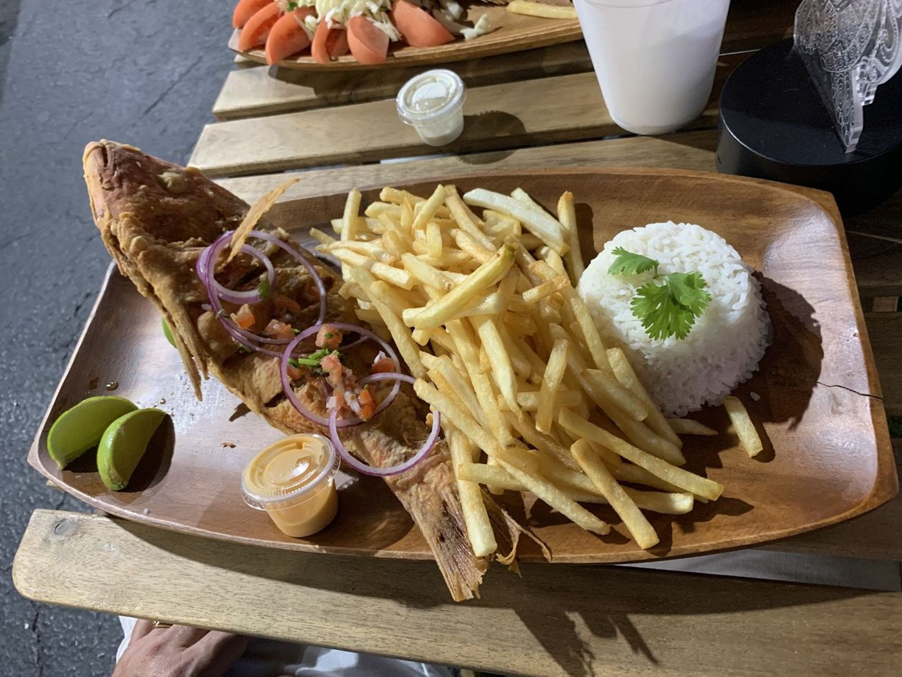
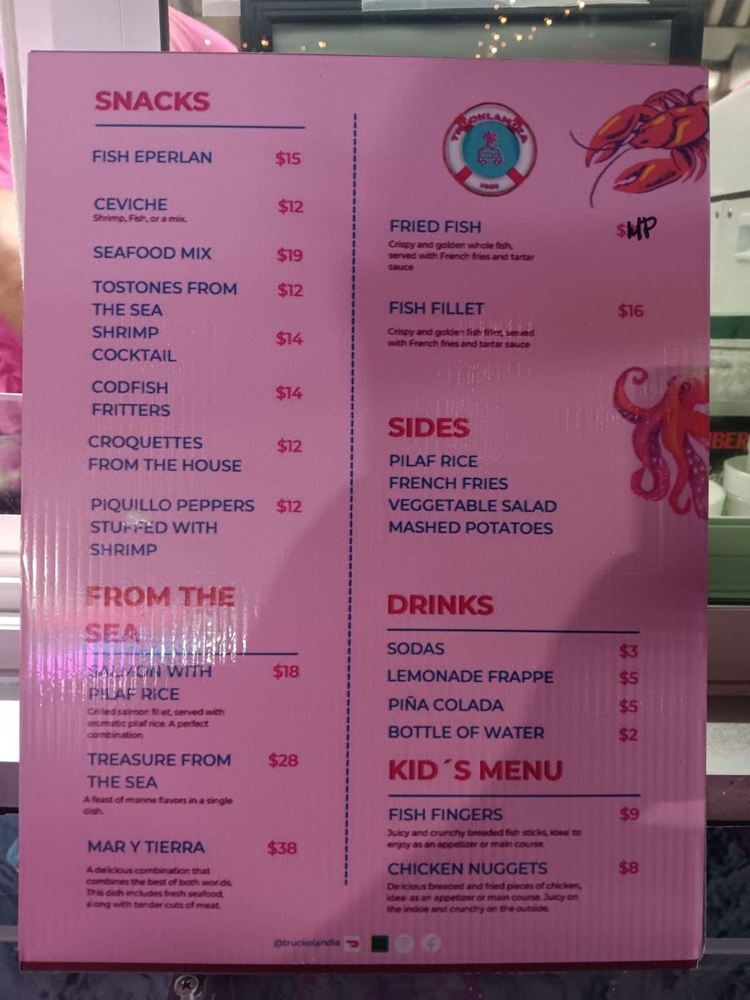
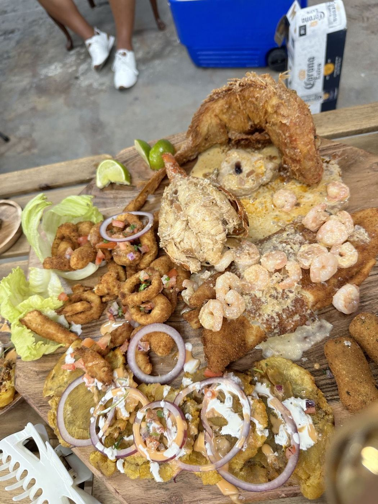
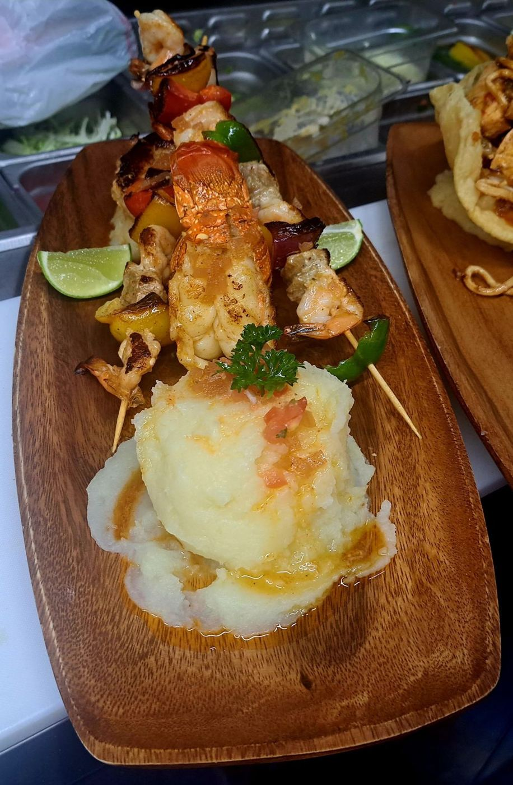
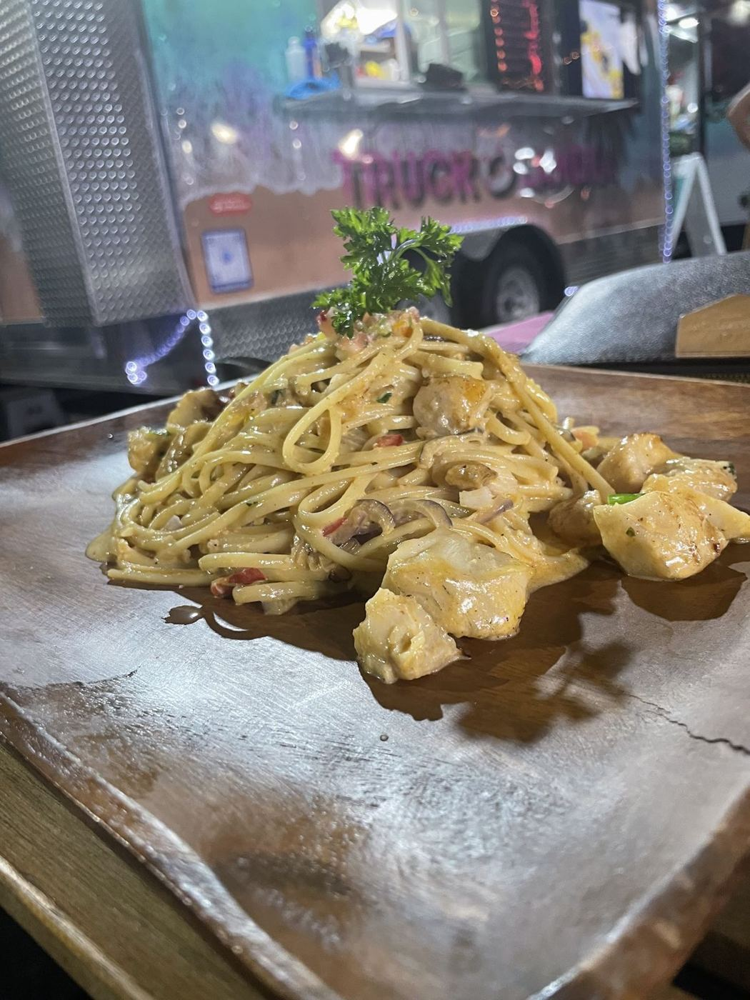

Services
The board includes ceviche, seafood mix, croquetas, fried fish, fish fillet, the “Tesoro del Mar” special, sides like rice, fries and salad, plus drinks and a kids’ menu.




- Seafood platterA big wooden board of fried and grilled seafood to share.
- Whole fried fishServed with fries, white rice and lime.
- Seafood skewersGrilled skewers over mashed potato.
- Seafood pastaCreamy pasta straight off the truck.